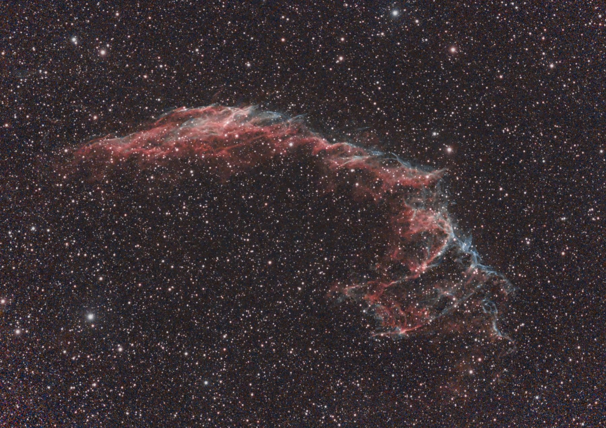

Freunde unter den Sternen
AstroRaef wurde im Februar 2026 in Buchs SG / Räfis gegründet. Wir sind ein bewusst kleiner Kreis von Hobby-Astronomen. Uns verbindet die Freude an klaren Nächten, an guter Technik und am gemeinsamen Staunen.
Beobachten
Sterne, Planeten und Galaxien mit eigenen Augen und mit Kamera entdecken.
Teleskopabende
Gemeinsame Nächte auf dem Balkon, am See oder wo immer der Himmel dunkel ist.
Wissen teilen
Vom Stacking bis zur Sternentstehung: Wir lernen voneinander.
Workshops
Vorträge und Workshops rund um Astronomie und Astrofotografie.

Unser Himmel
Alles eigene Aufnahmen des Clubs, gestackt aus hunderten Einzelbildern. Tippe auf ein Bild für den Steckbrief.
Unsere Reise durchs All
Von den ersten Versuchen am Orionnebel bis zum Schleiernebel: eine Auswahl unserer Nächte seit der Gründung.
Lust auf eine Nacht unter Sternen?
Wir sind ein kleiner Club mit höchstens sieben Mitgliedern. Über neue Mitglieder entscheiden wir gemeinsam. Melde dich gern, wenn du Interesse hast oder einfach einmal durchs Teleskop schauen möchtest.
- ✦ Gemeinsame Teleskop- und Fotonächte
- ✦ Austausch zu Technik, Bearbeitung und Himmelsobjekten
- ✦ Workshops und Vorträge